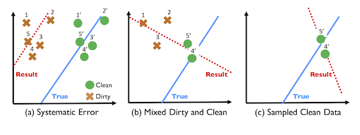

Cleaning for Data Science
Modern data science applications rely heavily on machine learning models. We seek to understand and optimize data cleaning in this new setting.
ActiveClean
Databases can be corrupted with various errors such as missing, incorrect, or inconsistent values. Increasingly, modern data analysis pipelines involve Machine Learning, and the effects of dirty data can be difficult to debug. Dirty data is often sparse, and naive sampling solutions are not suited for high-dimensional models.

The above figure shows how data cleaning can degrade the machine learning model.
- (a) shows how systematic corruption of data (from circles to crosses) can lead to a shifted, incorrect model. The dirty records are labeled 1-5 and the cleaned records labeled 1'-5'.
- (b) shows how cleaning two dirty records (4, 5) and combining the cleaned results (4', 5') with the dirty records (1, 2, 3) results in a worse model than no cleaning.
- (c) shows how only using the cleaned records (4', 5') can also result in a worse model due to sampling error.
ActiveClean is an iterative cleaning framework that can correctly retrain the machine learning model when data is cleaned, and provides a set of optimizations to select the best data to be cleaned. In this way, you only need to clean a small subset of the data in order to produce a model similar to if the full dataset were cleaned.
Install It
ActiveClean is a lightweight python framework can be installed using pip:
pip install activeclean
Check out the github page for code and usage instructions
Data Cleaning Benchmark
TBA